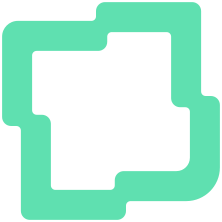

Norata Ir a la appÚltima actualización: 3 de septiembre de 2026
En corto: Norata guarda tu cuenta y lo que escribes dentro de ella para poder devolvértelo en todos tus aparatos. No vende tus datos, no muestra publicidad y no recibe nunca los datos de tu tarjeta. Puedes exportar todo y borrar tu cuenta cuando quieras, sin pagar nada y sin pedir permiso.
Jesús Eduardo Camarillo Pérez, con domicilio en Calle Fuente Aguamarina 8942-G, colonia Villa Fontana Diamante, C.P. 45200, Zapopan, Jalisco, México, en adelante «Norata», es responsable del uso y la protección de tus datos personales.
Para cualquier asunto relacionado con este aviso: norata@hopara.com.mx.
Todo lo que escribes dentro de Norata: misiones, habilidades, talentos, proyectos, notas, el historial de tu progreso y tus preferencias de configuración. Este contenido lo escribes tú y puede contener lo que decidas poner en él.
Si contratas un plan de pago guardamos el estado de tu plan, sus fechas y un identificador que nos da la plataforma de cobro. Norata nunca recibe, ve ni almacena los datos de tu tarjeta: el pago ocurre completo dentro de Stripe.
Cuando la app falla, se envía un reporte técnico con la versión de Norata, si usas computadora o teléfono, en qué parte ocurrió el fallo y el mensaje de error, recortado a 300 caracteres. Este reporte se manda aunque no hayas iniciado sesión, porque los fallos que más importan son los que impiden entrar. No incluye tu identidad ni el contenido de tus datos.
También se registra una marca de que abriste la app —el día, la versión y si fue desde teléfono o computadora— para saber cuánta gente la usa. Se guarda una sola marca por día y no lleva nada de lo que hiciste dentro.
Norata no solicita datos personales sensibles: salud, origen étnico, creencias religiosas, preferencia sexual, datos biométricos o financieros. Si en el futuro se añaden funciones que lean información de salud o actividad física, se te pedirá tu consentimiento expreso por separado antes de activarlas.
Norata no está dirigida a menores de 13 años y no recogemos datos a sabiendas de personas de esa edad.
Sin ellas Norata no puede funcionar:
Puedes negarte y seguir usando Norata igual:
Para negarte a las finalidades adicionales, escribe a norata@hopara.com.mx o usa el enlace para darte de baja que aparece al final de esos correos. Tu negativa no afecta tu cuenta ni tu suscripción.
No vendemos tus datos personales. Norata no muestra publicidad y no comparte tus datos con anunciantes ni con corredores de datos.
Para operar, tus datos pasan por proveedores que actúan por cuenta de Norata y solo pueden usarlos para prestarnos su servicio. Varios están fuera de México, principalmente en Estados Unidos y la Unión Europea:
| Proveedor | Para qué | Qué recibe |
|---|---|---|
| Supabase | Cuentas y base de datos | Correo, nombre y el contenido de tu cuenta |
| Stripe | Cobro de suscripciones | Correo y los datos de tu pago |
| Resend | Envío de los correos del servicio | Correo y nombre |
| GitHub Pages | Alojamiento de la aplicación | Datos técnicos de conexión |
Estas transferencias no requieren tu consentimiento por ser necesarias para cumplir la relación entre tú y Norata. Fuera de estos casos, solo compartiríamos tus datos si nos lo exige una autoridad competente conforme a la ley.
Los datos viajan cifrados y se guardan con acceso restringido: cada cuenta solo puede leer su propia información, y esa restricción está aplicada en el servidor, no solo en la app.
Conservamos tus datos mientras tu cuenta exista. Cuando borras tu cuenta, tu contenido se elimina. Por obligaciones fiscales y contables debemos conservar los registros de las operaciones de pago durante el plazo que marca la ley, aunque hayas borrado tu cuenta.
Puedes pedirnos en cualquier momento acceder a tus datos, rectificarlos si son incorrectos, cancelarlos cuando consideres que no los necesitamos, u oponerte a que los usemos para un fin concreto. También puedes revocar tu consentimiento.
Muchas de estas cosas las puedes hacer tú mismo y al instante desde la app: editar tu perfil, exportar todos tus datos, importarlos y borrar tu cuenta completa. Exportar, importar y borrar tu cuenta son gratuitos y no dependen de que tengas un plan de pago.
Si prefieres pedírnoslo, escribe a norata@hopara.com.mx desde el correo con el que te registraste, indicando qué derecho quieres ejercer y sobre qué datos. Te responderemos en un plazo máximo de 20 días hábiles y, si procede, lo aplicaremos dentro de los 15 días hábiles siguientes. Podemos pedirte que acredites tu identidad antes de proceder.
Si consideras que tu derecho a la protección de datos ha sido vulnerado, puedes acudir a la autoridad competente en materia de protección de datos personales.
Norata guarda información en tu propio navegador para que la app funcione sin conexión, recuerde tus preferencias y no te pida iniciar sesión cada vez. Esta información vive en tu dispositivo y puedes borrarla desde los ajustes de tu navegador; al hacerlo, se cerrará tu sesión.
Norata no usa cookies de publicidad ni de seguimiento entre sitios.
Este aviso puede cambiar cuando cambie la app, nuestros proveedores o la ley. La versión vigente estará siempre publicada en mi.norata.app/privacidad con su fecha de actualización. Si el cambio afecta de forma importante cómo usamos tus datos, te avisaremos por correo o dentro de la app antes de que entre en vigor.